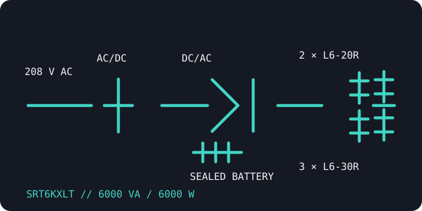

[ ONLINE DOUBLE-CONVERSION UPS // IDENTIFIED MODEL ]
Smart-UPS On-Line SRT6KXLT
A 208 V, 6 kVA / 6 kW North American tower UPS. The XLT model's output receptacles are not interchangeable with the SRT5KXLT's; match the complete SKU, wiring and load to the unit label.

ARCHIVAL IDENTIFICATION: Keep the exact suffix, serial/date code, firmware, battery-pack identity and management-card details with any installation or runtime record.
Exact model specifications
| Catalog category / topology | Online UPS — double-conversion online topology. |
|---|---|
| Electrical ratings | 6000 VA / 6000 W; nominal 208 V AC. Verify the selected output voltage and wiring from the nameplate and installation documentation. |
| Transfer behavior | 0 ms inverter transfer in normal online operation; static/maintenance bypass behavior is separate and model-specific. |
| Receptacles / connectors | Two NEMA L6-20R and three NEMA L6-30R output receptacles. Verify input connection, branch protection and wiring requirements against the exact product label/manual. |
| Battery / runtime | Internal sealed lead-acid battery system; compatible external battery packs are optional. Consult the manufacturer runtime chart for the measured load and account for pack age, charge and temperature. |
| Communication | LCD display/control, USB and serial signaling; SmartSlot network-management options depend on the installed card. |
| Compatibility / safety | Use only with loads inside the nameplate wattage and output-voltage limits. L6-20 and L6-30 plugs/circuits are not interchangeable; fixed wiring, grounding, battery service and protective devices must follow the Schneider Electric manual and applicable electrical code. |
Manufacturer references
- Schneider Electric — SRT6KXLT product recordManufacturer SKU listing for ratings, nominal voltage and output connector configuration.
- Schneider Electric — SRT 5K/6K operation manualManufacturer operation and safety guide for the applicable product family; check the exact model and revision.